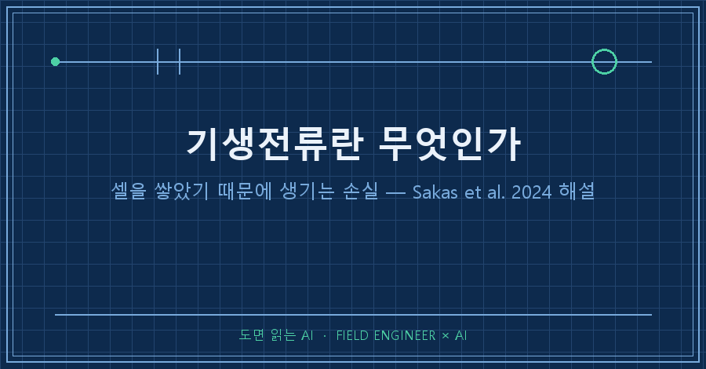
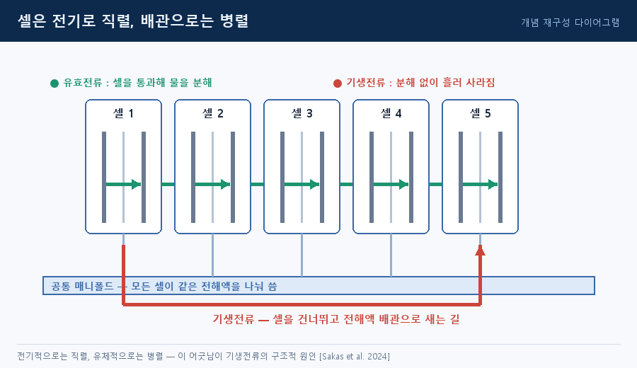
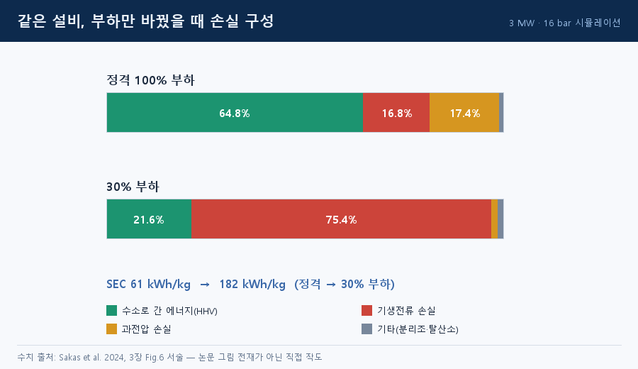
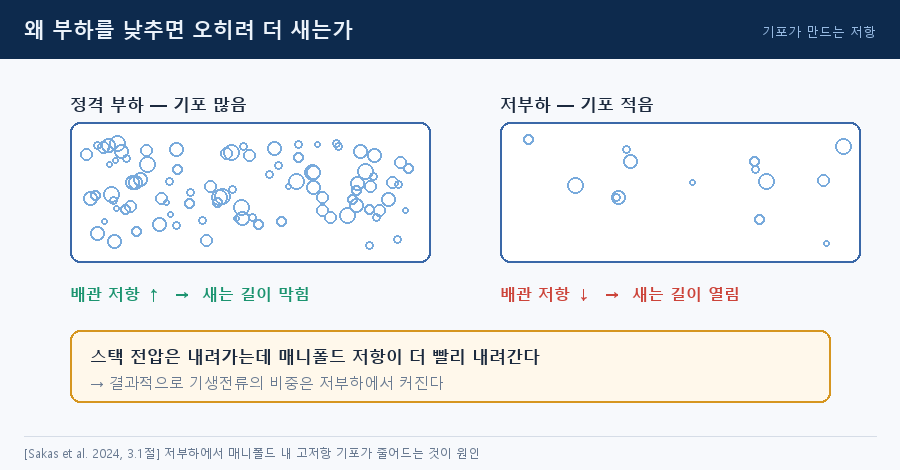
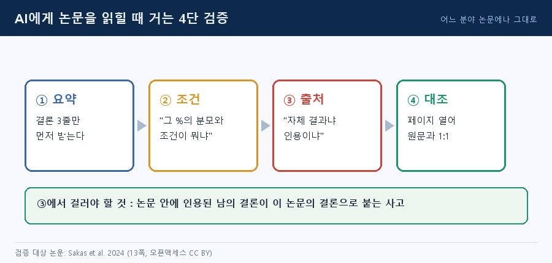

전해조에 넣은 전기가 전부 수소가 되지는 않습니다. 일부는 셀을 통과하지 않고 전해액 배관을 따라 그냥 흘러가요.
이게 기생전류(shunt current) 입니다. 오늘 읽은 논문은 정격 운전에서도 스택에 넣은 전력의 16.8%가 이 길로 샜다고 계산합니다 [Sakas et al. 2024].
AI로 논문 한 편씩 읽고 정리하는 연재예요. 이번엔 핀란드 LUT 연구팀이 2024년 Renewable Energy에 낸 오픈액세스 논문 13쪽입니다.
기생전류란 무엇이고, 왜 셀을 쌓으면 생기나요
스택의 전기회로에서 전해 경로가 아닌 저저항 경로로 흐르는 전류를 말합니다. parasitic·leakage·bypass current라고도 불러요 [Sakas et al. 2024].
원인은 고장이 아니라 구조입니다.
산업용 스택에서 셀은 전기적으로 직렬입니다. 전압을 높여야 같은 출력을 낮은 전류로 보낼 수 있으니까요. 그런데 전해액을 돌리는 배관은 모든 셀에 병렬로 물려 있어요. 한 통에서 퍼서 똑같이 나눠주니까요.
전해액은 그 자체가 전기가 통하는 액체입니다. 그래서 공통 배관 이 셀과 셀을 잇는 '염다리(salt bridge)'가 돼요. 첫 셀과 마지막 셀 사이 전압차가 크니, 전류 입장에선 셀을 통과하는 것보다 배관으로 돌아가는 쪽이 편한 길입니다 [Sakas et al. 2024, Fig.1].

피해는 효율에서 끝나지 않아요. 전력 손실, 전류효율 저하, 셀별 성능 불균일, 부식, 수력 계통 고장, 가스 오염까지 나열돼 있습니다 [Grimes et al., Sakas et al. 2024 재인용].
그럼 배관을 셀마다 따로 빼면 되지 않나요
분리형 구조도 있습니다. 그런데도 공통 배관을 쓰는 이유는 세 가지예요 [Sakas et al. 2024].
| 공통 배관을 쓰는 이유 | 대신 치르는 대가 |
|---|---|
| 모든 셀에 균일한 전해액 공급 | 셀 사이에 전류 우회로가 열림 |
| 열전달·냉각 등 열관리 효율 | 전류 분포가 불균일해짐 |
| 생성 가스의 효율적 배출 | 부식 등 2차 반응 유발 |
줄이는 방법은 알려져 있어요. 직렬 셀 수를 줄이거나, 배관을 길고 좁게 만들어 저항을 키우는 식입니다. 밸브로 흐름을 끊는 방법도 있지만 공통 배관을 쓰기로 한 이유와 정면으로 모순되죠.
그래서 길고 가는 귀환배관을 써도 직렬 50셀 이 실질 한계로 인용돼 있습니다 [Swiegers et al., Sakas et al. 2024 재인용].
얼마나 새는지 논문은 어떻게 쟀나요
직접 측정이 아니라 시뮬레이션입니다. 핀란드의 실제 3 MW·16 bar 알칼라인 수전해 플랜트로 검증한 MATLAB 동적 모델을 돌렸어요. 명목 전류 9,135 A, 전해액 입구 70 ℃ 조건입니다 [Sakas et al. 2024].
핵심은 계수 k예요. k = 1이 실제 플랜트 수준이고, k = 0이면 전혀 새지 않는 가상의 스택입니다.
| 항목 | 정격 100% 부하 | 30% 부하 |
|---|---|---|
| 새어 나간 전력 비중 | 16.8% | 75.4% |
| 수소로 간 에너지(HHV) | 64.8% | 21.6% |
| 과전압 손실 | 17.4% | 1.7% |
| 단위 에너지 소비(SEC) | 61 kWh/kg | 182 kWh/kg |

직관과 어긋나는 대목이 있어요. 부하를 낮추면 전압도 내려가니 덜 샐 것 같은데 반대입니다.
설명은 기포예요. 높은 부하에선 배관 안이 가스 기포로 차서 저항이 크지만, 부하가 낮아지면 기포가 줄어 배관 저항이 전압보다 더 빨리 떨어집니다 [Sakas et al. 2024, 3.1절].

안전 하한도 같이 올라가요. 수소가 산소 쪽으로 넘어간 농도가 폭발하한(LEL)의 절반에 닿는 지점이 운전 하한인데, 이 설비는 명목 전류의 46.5% 였습니다(수소 14.0 kg/h). 기생전류가 없는 k = 0이면 최소 출력이 109 kW인데, 실제인 k = 1에선 547 kW로 다섯 배가 됩니다 [Sakas et al. 2024, Table 2].
이 논문이 답하지 않은 것
숫자는 전부 계산값입니다. 모델은 실제 플랜트로 검증됐지만 16.8%나 75.4%가 계측기로 찍은 값은 아니에요.
사례도 3 MW·16 bar 한 대이고, 라인 최적화는 정상상태 기준입니다. 라인별 열화 차이, 보조설비 공유, 압축기·저장까지 넣은 계산은 후속 과제로 남겼다고 밝혀요 [Sakas et al. 2024, 4장].
이 논문을 AI에게 읽힌 방법
여기부터는 논문 내용이 아니라 읽는 방법이에요. 어느 분야 논문에나 그대로 씁니다.

먼저 결론 세 줄을 받습니다. 요약은 숫자를 대체로 맞게 뱉는데 조건을 떨궈요. 그래서 두 번째로 분모를 묻습니다.
%로 표기된 수치를 표로 정리해줘.
각 행에 [값 / 분모 / 조건(부하·온도·압력) / 페이지] 열을 반드시 채울 것.
원문에서 못 찾으면 '원문 없음'이라고 써.이걸 안 물으면 "75%가 샌다"가 상시 성능처럼 굳어버립니다. 실제로는 30% 부하라는 조건이 붙고, 같은 논문의 안전 하한이 46.5%니까 30%는 경향을 보려고 일부러 내려간 계산 구간이에요.
세 번째가 제일 많이 걸리는 함정입니다. 논문 안에 인용된 남의 결론이 이 논문의 결론으로 붙는 사고예요.
아래 주장 각각에 대해 답해줘.
(1) 이 논문의 자체 결과인가, 다른 문헌 인용인가
(2) 인용이면 참고문헌 번호와 해당 문장을 그대로 붙일 것이 글의 '50셀 한계'와 '피해 목록'도 자체 실험 결과가 아니라 인용이라 표기를 따로 했습니다.
마지막은 대조예요. 페이지 번호를 강제로 받아 그 쪽을 열고 원문과 1:1로 맞춰봅니다. 같은 수치가 본문과 결론 양쪽에 나오는지도 확인해요. 16.8%와 75.4%는 3장과 4장에 똑같이 적혀 있어서 통과했습니다.
재미있는 건 이 논문도 저자들이 문장 다듬기에 AI 도구를 썼다고 말미에 명시해 뒀다는 점이에요 [Sakas et al. 2024, Declaration].
미리 답해두는 질문 셋
Q. 절연이 나빠서 생기는 건가요?
아니요. 전해액 자체가 도체라서, 셀들이 같은 배관으로 전해액을 나눠 쓰는 순간 그 배관이 전류의 우회로가 됩니다 [Sakas et al. 2024].
Q. 그럼 셀을 무한정 쌓을 수는 없겠네요?
네. 배관을 길고 가늘게 해도 직렬 50개 언저리가 실질 한계로 인용돼 있어요 [Swiegers et al., Sakas et al. 2024 재인용].
Q. 75.4%면 전기의 4분의 3이 버려진다는 뜻인가요?
그 조건에서만요. 30% 부하는 경향을 보기 위한 계산 구간이고, 안전 운전 하한은 명목 전류의 46.5%입니다 [Sakas et al. 2024].
---
정리하면 기생전류는 고장이 아니라 셀을 쌓고 배관을 공유하기로 한 설계의 청구서예요. 없앨 수 없으니 관리 대상이 됩니다.
다음 편에서는 왜 하필 부분부하에서 효율이 급격히 무너지는지, 재생에너지에 물린 설비가 그 구간을 피할 수 없는 이유를 같은 논문의 최적화 결과로 이어서 보겠습니다.
논문을 AI로 읽고 남긴 기록은 makefield.ai에 모아두고 있어요.